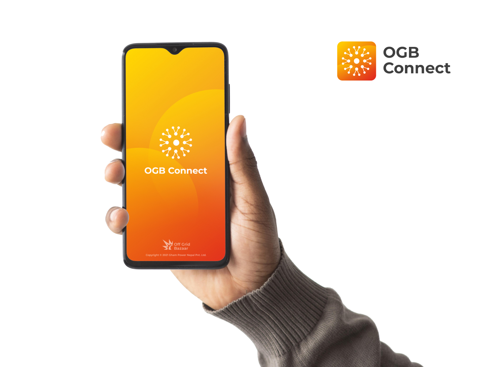

Objective
Gham Power had a lead collector app for microfinance organizations that needed improvement. The original application served dual purposes—lead collection and comprehensive farmer data gathering—resulting in a complex 27+ field form that took over 6 minutes to complete. We needed to simplify the process and dramatically increase lead generation.
My Role
Design LeadResearch DesignUser TestingDesign Handover
Process
Field ResearchInterviews and testsData-driven decisionsMVP TestingIterative Design
Deliverables
Lead Collection AppLead Classification SystemLead Management PlatformDesign System
Challenges
The existing application tried to do too much at once. With 27 mandatory fields and 20+ optional fields, it took more than 6 minutes and 40 seconds to register a single lead. Multiple organizations were already using this system, so any redesign needed strong justification and would face scrutiny.
Approach
We conducted virtual and on-site interviews with microfinance employees in rural Nepal to understand their daily work life and relationship with the current app. Pre-planned questionnaires converted subjective feedback into quantifiable metrics, removing bias from decision-making. We launched an MVP first, tested it for three months, gathered feedback, and iterated before full rollout.
1/5
MVP Design
An MVP version of the idea was designed and tested on a small user base

2/5
A fresh rebrand
With the success of the MVP, the lead managment pipeline was also rebranded to refresh sentiments
3/5
Minimal, focused redesign
Simplified lead collection that cut time from 6 minutes to 20 seconds
4/5
Complete lead management pipeline
Full lead classification and management system to complete the full pipeline
5/5
Thinking beyond digital solutions
Some non-digital solutions were also designed to aid the microfinance people to talk pitch our products better
This project was a revision and reinforcement of all the UX related learnings I'd collected over the years. Here are some of the key learning that have stuck with me.
© 2026 Apurba Neupane


{kind=link}
{kind=link}
{kind=link}
{kind=link}
{kind=link}
{kind=link}
{kind=link}
{kind=link}
{kind=link}
{kind=link}
{kind=link}
{kind=link}